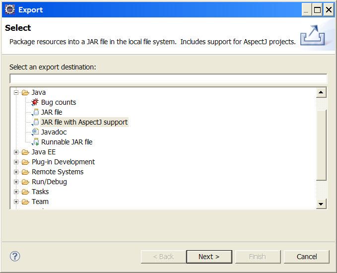
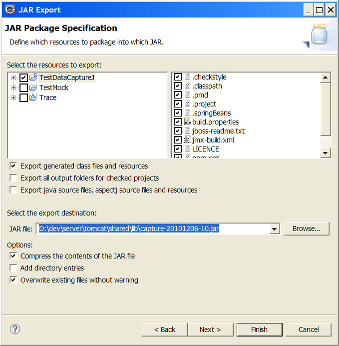
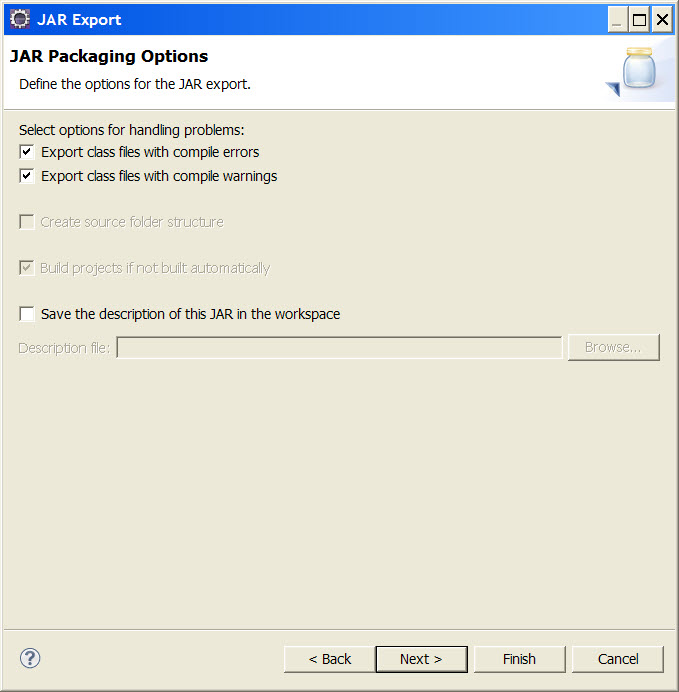
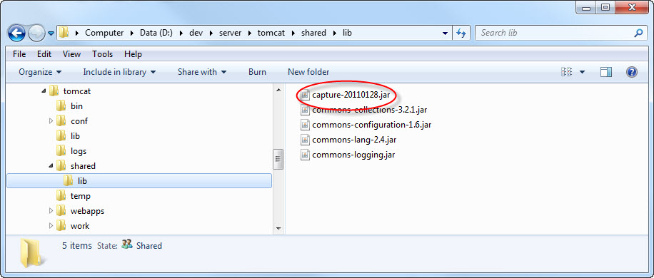

Table of Contents
The following prerequisite software is required, has only been tested in a Windows environment.
Eclipse IDE 3.4+ http://www.eclipse.org
AJDT, the AspectJ plugin for Eclipse http://www.eclipse.org/ajdt
AspectJ (i.e. 1.6.8 or 1.6.9, the version that matches the AspectJ version from the ADJT plugin that you are using) http://www.eclipse.org/aspectj
Dependency utility jars:
Apache commons-collections
Apache commons-configuration
Apache commons-lang
Apache commons-logging
Log4j
Apache Tomcat 6.x or JBoss AS 4.x for testing in a web application or for trying the tutorial example.
To go through the tutorial you will also need the Spring JPetStore sample application. https://src.springframework.org/svn/spring-maintenance/trunk/samples/jpetstore/
Note that the project is distributed as source code within an Eclipse IDE project. TestDataCaptureJ requires the Eclipse IDE for the build once it has been configured for the application you want to test. Currently there is no build script for it.
Install the Eclipse IDE, this usually just involves unzipping the downloaded file to a location of your choosing.
Install the ADJT plugin into Eclipse.
Get the TestDataCaptureJ project, either from version control (using Git) or download testdatacapturej-xxx.zip and unzip it.
Import TestDataCaptureJ into the Eclipse IDE as an existing project.
Currently has only been tested running web applications on Tomcat 6.x and JBoss AS 4.x so you will need to run your test application, i.e. the application that you want to capture test data on, on one of these app servers.
Please note that I am a developer, not a server admin expert, so while I've illustrated how to configure the server - it's not necessary the best way to do it.
Install the app server, if required.
Deploy your test web application to the app server and ensure that it runs properly, especially at the point that you want to capture the test data, e.g. at the end of the checkout process for a shopping application. Then stop the app server so that it can be configure and setup for TestDataCaptureJ.
Configure the project to intercept the application at the point where you want to capture the test data. You will need access to the source code or the API for the test application to determine the best place for this. Also you will need to know about how to configure AspectJ pointcuts, refer the the AspectJ documentation for this.
Edit
conf/META-INF/aop.xmlin the TestDataCaptureJ project in Eclipse by adding a <concrete-aspect> tag to the xml file nested inside the <aspects> tag. Following the template in the listing below, you need to:create a valid dummy class name for the 'name' attribute
create an AspectJ pointcut expression for the 'pointcut' element named 'loggedParamOperations', if the object you want to capture is a parameter of a method
create an AspectJ pointcut expression for the 'pointcut' element named 'loggedReturnOperations', if the object you want to capture is a return value of a method
Fragment of
'conf/META-INF/aop.xml':<aspectj> <aspects> <aspect name="au.dom.dw.testdatacapturej.aspect.Trace"/> <aspect name="au.dom.dw.testdatacapturej.aspect.TraceAdaptor"/> . . . <!-- Template for your own tests --> <concrete-aspect name="au.dom.dw.testdatacapturej.aspect.[Insert dummy class name]" extends="au.dom.dw.testdatacapturej.aspect.TraceAdaptor"> <pointcut name="loggedParamOperations" expression="execution([Insert AspectJ pointcut expression])"/> <pointcut name="loggedReturnOperations" expression="execution([Insert AspectJ pointcut expression])"/> </concrete-aspect> . . . </aspects> . . . </aspectj>Have a look at the tutorial for an example.
Configure the file
conf/log4j.xmlto set the name and location of the generated log file that you want. This log file should contain the test data you're after.Fragment of
'conf/log4j.xml':<?xml version="1.0" encoding="UTF-8"?> <!DOCTYPE log4j:configuration SYSTEM "log4j.dtd"> <!-- ===================================================================== --> <!-- --> <!-- Log4j Configuration --> <!-- --> <!-- ===================================================================== --> <log4j:configuration xmlns:log4j="http://jakarta.apache.org/log4j/" debug="false"> . . . <appender name="au.com.dw.testdatacapturej-file" class="org.apache.log4j.FileAppender"> <param name="file" value="[Insert logging location and file name]" /> <param name="threshold" value="info" /> <param name="immediateFlush" value="true" /> <param name="append" value="false" /> <layout class="org.apache.log4j.PatternLayout"> <param name="ConversionPattern" value="// Generated %d{ABSOLUTE} %n%m%n" /> </layout> </appender> . . .The changes involve editing the <appender> tag named 'au.com.dw.testdatacapturej-file'. Just change the value for the <param> tag for 'file' to a valid path on your local machine. For example if it is setup in Tomcat to '${catalina.home}/logs/Test.java' so that the generated file will appear in the 'logs' directory in your Tomcat installation. Have a look at the tutorial for an example.
Create the a jar file by exporting the TestDataCaptureJ project as a jar file with AspectJ support in Eclipse. You can call this jar file whatever you want, but for this documentation we'll just call in 'capture-xxx.jar' where 'xxx' is some sort of identifier or date.
Right click on the TestDataCaptureJ project in the package explorer window in Eclipse, and select 'Export ...' from the context menu.

From the Export dialog, select the 'JAR file with AspectJ support' option.
Go through the export wizard using your own name and location for the generated capture jar file.

Configure the app server to handle AspectJ load time weaving and copy the capture jar file you have generated, the AspectJ runtime jars, the log4j.xml file and the necessary dependencies to the app server. This step is specific to the app server you are using, see below.

Note: {TOMCAT_HOME} refers to the location where you have installed Tomcat.
Copy the
conf/log4j.xmlfile and the log4j-xxx.jar file to {TOMCAT_HOME}/lib, since we require Log4J to do the actual logging of the captured test data.Copy the AspectJ runtime jars needed for load time weaving to {TOMCAT_HOME}/lib. These are aspectjrt.jar and aspectjweaver.jar.

Create a shared library directory in Tomcat at {TOMCAT_HOME}/shared/lib.
Copy the dependency jars to the shared library directory at {TOMCAT_HOME}/shared/lib. These are:
commons-collections-xxx.jar
commons-configuration-xxx.jar
commons-lang-xxx.jar
commons-logging.jar
Copy the capture jar that you have generated to {TOMCAT_HOME}/shared/lib. Hint: you can just export the jar directly to this location when you generate it without having to do this step.
Make the changes to catalina.bat in {TOMCAT_HOME}/bin so that the AspectJ load-time weaving will be done.
Hint: It is a good idea to make a backup of catalina.bat in your Tomcat installation before making changes to it.
Fragment of
'bin/catalina.bat':. . . set ASPECTJ_WEAVING=-javaagent:%CATALINA_BASE%\lib\aspectjweaver.jar -Xmx1024m set JAVA_OPTS=%JAVA_OPTS% %ASPECTJ_WEAVING% . . .
The changes involve adding the ASPECTJ_WEAVING variable to the file, and then adding that variable to be included in the JAVA_OPTS variable. There is a section in
'bin/catalina.bat'where the JAVA_OPTS variable is set, so a good place to add our changes is at the end of this section. Note that the ASPECTJ_WEAVING variable must point to the location where you have copied aspectjweaver.jar to your Tomcat installation.An example of an edited file can be found in the TestGen project at
tutorial/tomcat/bin/catalina.bat, n. Note this this example file is from an installation of Tomcat 6.0.26, so may vary slightly from your copy of catalina.bat if you have installed a different version of Tomcat.